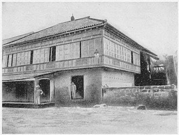

Calamba Escapes
Our Services
City ToursExplore the vibrant cities of Calamba with our guided tours. Discover the rich culture and iconic landmarks.
Souvenir ShopsMore Than a Memento, It's a Memory of Calamba
 Cultural ExperiencesImmerse yourself in the local heritage through interactive activities and traditional performances. Learn about the customs and traditions.
Introducing CalambaEscapes, your ultimate destination for an unforgettable tourism experience in Calamba. Our dedicated team is committed to providing you with top-notch services and curated itineraries that showcase the beauty and adventure-filled trip. CalambaEscapes has got you covered. Immerse yourself in rich history, indulge in delicious local cuisine, and explore the breathtaking landscapes that Calamba has to offer. Discover the true essence of tourism with CalambaEscapes and create memories that will last a lifetime.